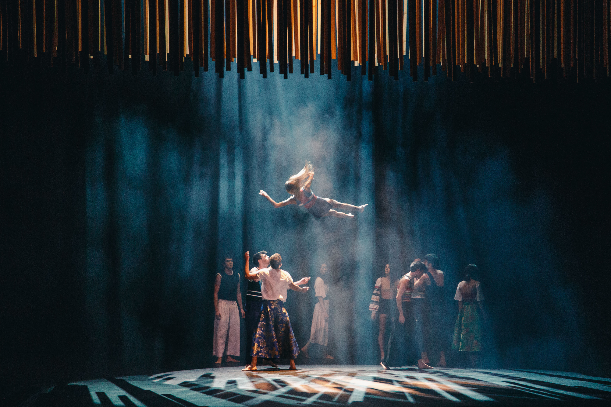
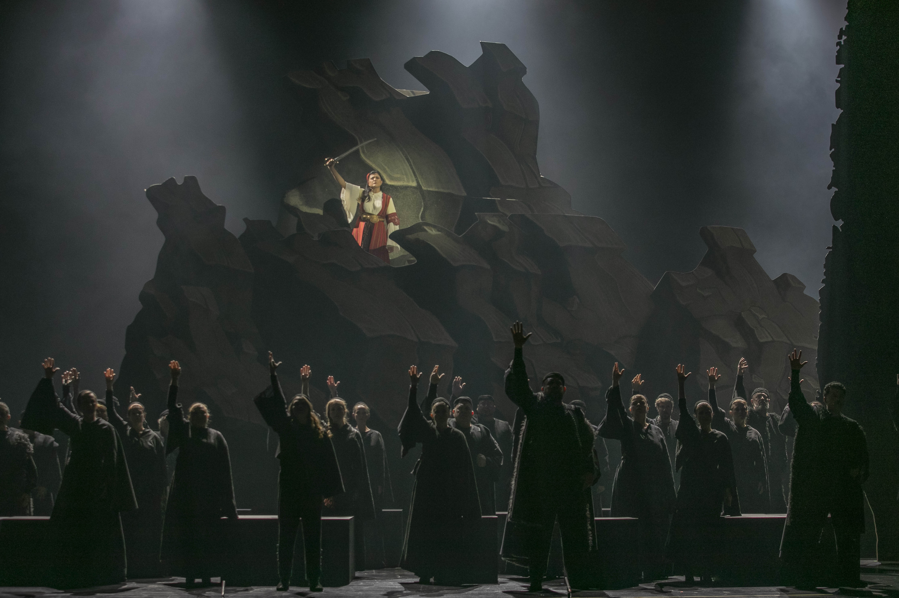

Η Λυρική γιορτάζει την 25η Μαρτίου με έργα Παύλου Καρρέρ και Νίκου Σκαλκώτα
Αποσπάσματα από τη Δέσπω και τους Ελληνικούς χορούς θα προβληθούν την Πέμπτη 25 Μαρτίου 2021 στις 20.00 στο nationalopera.gr, στο Facebook και στο YouTube της ΕΛΣ.
Με ένα αφιερωματικό βίντεο με αποσπάσματα από την όπερα Δέσπω του Παύλου Καρρέρ και τους Ελληνικούς χορούς του Νίκου Σκαλκώτα η Εθνική Λυρική Σκηνή θα τιμήσει την επέτειο της συμπλήρωσης των 200 ετών από την Επανάσταση του 1821, την Πέμπτη 25 Μαρτίου 2021 στις 20.00. Το βίντεο θα προβληθεί στο nationalopera.gr, στο Facebook και στο YouTube της ΕΛΣ.
Η παραγωγή τελεί υπό την αιγίδα της Α.Ε. της Προέδρου της Δημοκρατίας Κατερίνας Σακελλαροπούλου.
Η παραγωγή υλοποιείται με τη στήριξη τηςδωρεάς του Ιδρύματος Σταύρος Νιάρχος (ΙΣΝ) [www.SNF.org] για τη δημιουργία του επετειακού προγράμματος της Εθνικής Λυρικής Σκηνής για τα 200 χρόνια από την Ελληνική Επανάσταση του 1821.

To δίπτυχο όπερας και χορού Δέσπω – Ελληνικοί χοροί βιντεοσκοπήθηκε στις 6 και 7 Μαρτίου 2021 και θα είναι διαθέσιμο στην GNO TV στις αρχές Μαΐου. Αποσπάσματα από τη νέα φιλόδοξη παραγωγή θα προβληθούν για πρώτη φορά στο site και στα social media της ΕΛΣ στις 25 Μαρτίου 2021 στις 20.00. Το αφιερωματικό βίντεο προλογίζει ο Καλλιτεχνικός Διευθυντής της ΕΛΣ Γιώργος Κουμεντάκης, ενώ για τη σημασία των δύο εμβληματικών έργων της Επτανησιακής και της Εθνικής Σχολής αντίστοιχα μιλάει ο υπεύθυνος του Τομέα Δραματολογίας Νίκος Δοντάς.
ΔΕΣΠΩ
«Παρά σκλαβιά τον θάνατο ο ήρως προτιμά», τραγουδά η Δέσπω λίγο πριν ανατινάξει τον πύργο του Δημουλά (Κάστρο Ρινιάσας) στο Ζάλογγο για να βάλει τέλος στη ζωή τη δική της καθώς και της οικογένειάς της, προκειμένου να μην παραδοθούν στο τουρκικό στράτευμα του Αλή Πασά, στην τελευταία σκηνή του μονόπρακτου μελοδράματος Δέσπω, η ηρωίς του Σουλίου. Πρόκειται για την τρίτη όπερα του Παύλου Καρρέρ (1829-1896), που βασίστηκε σε ελληνικό θέμα και η οποία χαρακτηρίζεται το «πρώτον ελληνικόν τραγικόν μελόδραμα», καθώς είναι η πρώτη ελληνική όπερα βασισμένη εξαρχής σε ελληνικό λιμπρέτο. Τη Δέσπω ιηύθυνε ο Γιώργος Ζιάβρας, σκηνοθέτησε ο Γιώργος Νανούρης, τα σκηνικά-κοστούμια υπέγραψε ο Άγγελος Μέντης και τους φωτισμούς ο Αλέκος Γιάνναρος. Τον ρόλο του τίτλου ερμηνεύει η Άρτεμις Μπόγρη και μαζί της οι Δημήτρης Πακσόγλου, Διαμάντη Κριτσωτάκη, Γιάννης Σελητσανιώτης και η Χορωδία της ΕΛΣ.

ΕΛΛΗΝΙΚΟΙ ΧΟΡΟΙ
Oι 36 Ελληνικοί χοροί για ορχήστρα θεωρούνται το δημοφιλέστερο έργο του Νίκου Σκαλκώτα, λόγω του τρόπου με τον οποίο μετουσιώνουν το «εθνικό» στοιχείο της παραδοσιακής μουσικής στο πλαίσιο μιας σύγχρονης αλλά εύληπτης μουσικής γλώσσας. Το κλασικό αυτό μνημείο της νεοελληνικής μουσικής αποτελεί τη βάση για τη συνεργασία του Μπαλέτου της ΕΛΣ με δύο από τις πλέον διακεκριμένες χορογραφικές δυνάμεις της χώρας, που ψηλαφούν, με τον ιδιαίτερο τρόπο τους, τη σχέση του κληρονομημένου εθνικού αφηγήματος με το σήμερα, διακόσια χρόνια μετά την Επανάσταση που οδήγησε στην ίδρυση του νεοελληνικού κράτους. Στο Α΄ Μέρος με τίτλο Εθνική ενηλικίωση, τη χορογραφία υπογράφει η Πατρίσια Απέργη, τα σκηνικά ο Δημήτρης Νασιάκος, τα κοστούμια η Πατρίσια Απέργη και η Ειρήνη Γεωργακίλα, τους φωτισμούς ο Νίκος Βλασόπουλος και τον ηχητικό σχεδιασμό ο Αλέξανδρος Δράκος-Κτιστάκης. Στο Β΄ Μέρος με τίτλο Finality, τη χορογραφία υπογράφουν οι RootlessRoot – Λίντα Καπετανέα, Γιόζεφ Φρούτσεκ, τα σκηνικά ο Πάρις Μέξης, τα κοστούμια η Ίζαμπελ Λόας, τους φωτισμούς ο Περικλής Μαθιέλλης και τον ηχητικό σχεδιασμό ο Χρήστος Παραπαγκίδης.
Την Ορχήστρα της ΕΛΣ διευθύνει ο Γιώργος Ζιάβρας.
Συμμετέχουν χορευτές του Μπαλέτου της Εθνικής Λυρικής Σκηνής.
Η παραγωγή Δέσπω – Ελληνικοί χοροί θα είναι διαθέσιμη στην GNO TV στις αρχές Μαΐου 2021.
Χορηγός παράστασης Τράπεζα Πειραιώς
Μέγας Δωρητής ΕΛΣ & Δωρητής επετειακού προγράμματος 2021 Ίδρυμα Σταύρος Νιάρχος
Για περισσότερες πληροφορίες σχετικά με την ιστορία της ΕΛΣ, μπορείτε
να επισκεφθείτε την ιστοσελίδα του Εικονικού Εκπαιδευτικού Μουσείου
http://virtualmuseum.nationalopera.gr/